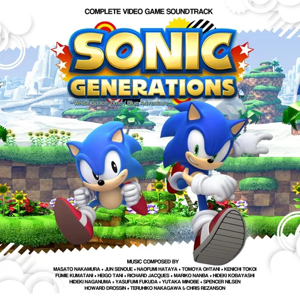
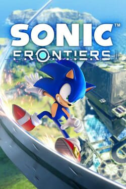
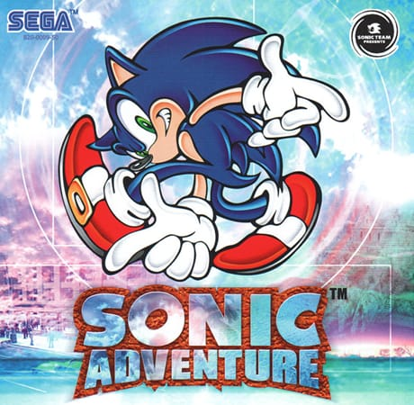
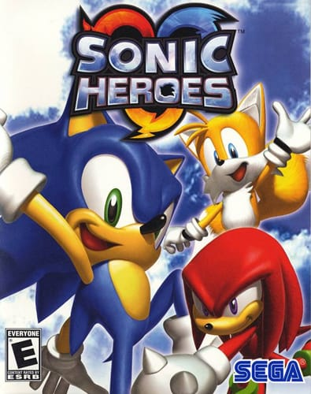

aqui está jogos antigos, desconhecidos e atuais

Sonic the Hedgehog (1991)
🕹️Plataforma: Mega Drive / Sega Genesis
📅 Ano: 1991
Descrição: O jogo que começou tudo! Sonic corre por cenários coloridos coletando anéis
e enfrentando o Dr. Robotnik para salvar os animais presos em máquinas. ⭐ Curiosidade: Foi criado paracompetir com o Mario da Nintendo e se tornou o mascote da SEGA.

💫 Sonic the Hedgehog 2 (1992)
🕹️Plataforma: Mega Drive / Sega Genesis
📅 Ano: 1992
📖 Descrição: Introduz Tails, o fiel amigo de duas caudas. Traz novas fases e o famoso Spin Dash, movimento que se tornou marca registrada do Sonic. ⭐ Curiosidade: É um dos jogos mais vendidos da SEGA de todos os tempos.
🌍Sonic Generations (2011)
🕹 Plataforma: PS3 / Xbox 360 / PC
📅 Ano: 2011
📖 Descrição: O Sonic em mundo aberto! Corra por ilhas misteriosas, resolva enigmas e enfrente inimigos gigantes num novo estilo de jogabilidade. ⭐ Curiosidade: É o primeiro jogo da série com exploração livre e combate em tempo real.

🏆Sonic Mania (2017)
🕹 Plataforma: PS4 / Switch / Xbox / PC
📅 Ano: 2017
📖 Descrição: Uma carta de amor aos fãs clássicos! Recria o estilo 2D dos anos 90 com novas fases e trilha sonora nostálgica. ⭐ Curiosidade: Foi criado por fãs que depois foram contratados oficialmente pela SEGA.
🔮Sonic Frontiers (2022)
🕹 Plataforma: PS5 / Xbox Series / Switch / PC
📅 Ano: 2022
📖 Descrição: O Sonic em mundo aberto! Corra por ilhas misteriosas, resolva enigmas e enfrente inimigos gigantes num novo estilo de jogabilidade. ⭐ Curiosidade: É o primeiro jogo da série com exploração livre e combate em tempo real.
Sonic Adventure (1998)
🕹 Plataforma: Dreamcast
📅 Ano: 1998
📖 Descrição: Primeira aventura 3D completa do Sonic. Mistura ação e exploração com diferentes personagens jogáveis, cada um com sua história. ⭐ Curiosidade: Foi um marco técnico para a época e ajudou a definir o estilo moderno do Sonic.
🌈 4. Sonic Heroes (2003)
🕹 Plataforma: PS2 / GameCube / Xbox
📅 Ano: 2003
📖 Descrição: Controla três personagens ao mesmo tempo (Sonic, Tails e Knuckles). Cada equipe tem habilidades únicas, trazendo uma jogabilidade cooperativa divertida. ⭐ Curiosidade: Primeiro jogo multiplataforma da série principal do Sonic.